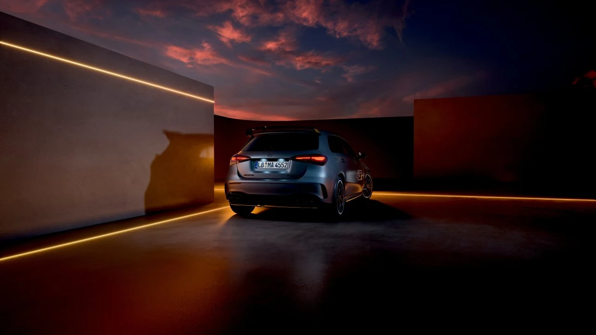
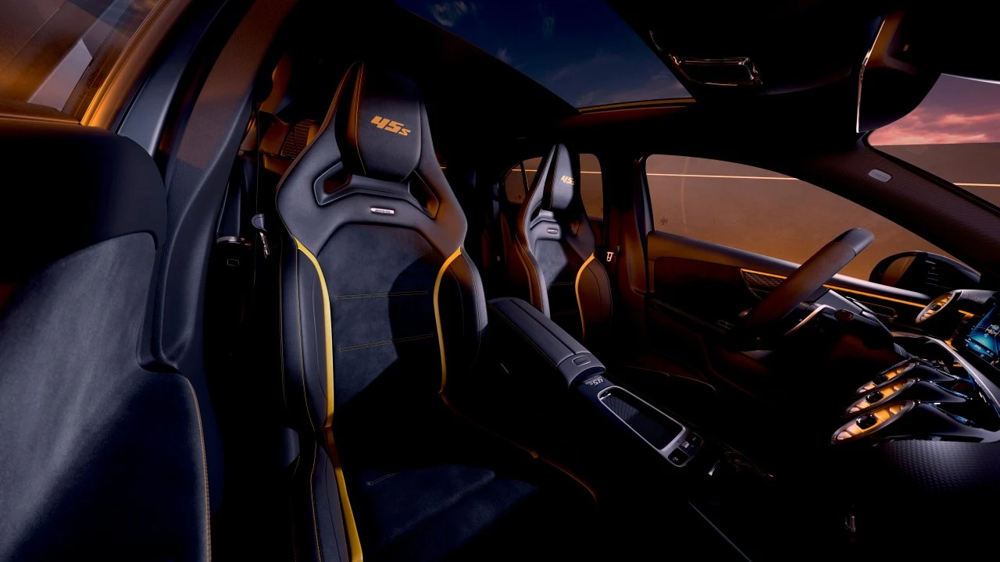

▲ 파이널 에디션 공식 사진. 펜더에 새겨진 옐로우 '45S' 그래픽이 전용 사양임을 알려준다 ⓒ Mercedes-Benz
지난 7월 28일(현지시간) 메르세데스-AMG가 A45 S 4MATIC+의 마지막 스페셜 버전 '파이널 에디션'을 공개했습니다. 2019년 2세대(W177)로 데뷔한 이후 약 7년간 '세계에서 가장 강력한 양산 4기통 엔진'이라는 타이틀을 지켜온 A45 S가, A클래스 단종이 예고된 상황에서 사실상 마지막 인사를 건네는 모델입니다. 현재 영국 등 일부 시장에서 주문이 시작됐으며, 정확한 국내외 생산 대수는 아직 공개되지 않았습니다.
1. 왜 지금 '파이널'인가 — A클래스 단종과 맞물린 은퇴

▲ 파이널 에디션 공식 후면 사진 ⓒ Mercedes-Benz
메르세데스-벤츠는 그동안 A클래스를 포함한 컴팩트 라인업을 7개 차종에서 4개로 줄이는 구조조정을 예고해왔습니다. 한때 전동화 라인업으로만 전환하며 A클래스를 2026년 단종할 계획이었으나, 전기차 수요가 예상보다 더디게 늘면서 생산을 헝가리 케치케메트 공장으로 옮겨 당분간 명맥을 유지하는 쪽으로 방침이 바뀌기도 했습니다. 다만 고성능 버전인 A45 S의 직접적인 후속 모델은 메르세데스-AMG 측에서 아직 확정하지 않았습니다. 브랜드의 차세대 컴팩트 고성능 모델은 전동화 파워트레인 중심의 MMA 플랫폼 기반 CLA 쪽으로 무게중심이 옮겨가는 분위기여서, 2.0L 터보 4기통 내연기관을 앞세운 지금의 A45 S 성격을 그대로 잇는 모델이 나올지는 불투명합니다.
이 때문에 이번 파이널 에디션은 단순한 페이스리프트 특별판이 아니라, 421마력을 뽑아내는 M139 엔진 자체에 대한 작별 인사로 받아들여지고 있습니다. 2019년 데뷔 당시부터 '세계에서 가장 강력한 양산 4기통 엔진'이라는 수식어를 달고 다녔던 만큼, 이번 에디션에도 그 상징성을 강조하는 디자인 요소가 집중적으로 반영됐습니다.
2. 파워트레인은 그대로 — 421마력 M139 엔진 유지
파워트레인은 기존 A45 S 4MATIC+와 동일합니다. 2.0L 직렬 4기통 터보 M139 엔진이 최고출력 421마력(PS), 최대토크 500Nm을 내며, 8단 습식 듀얼클러치 변속기와 토크 컨트롤 기능이 포함된 AMG 퍼포먼스 4MATIC+ 상시 사륜구동이 맞물립니다. 정지 상태에서 시속 100km까지는 3.9초, 최고속도는 전자식으로 제한된 270km/h로 기존 스펙 그대로 유지됩니다.
| 항목 | 제원 |
|---|---|
| 엔진 | M139 2.0L 직렬 4기통 터보 |
| 최고출력 | 421마력(PS) |
| 최대토크 | 500Nm |
| 변속기 / 구동방식 | 8단 DCT / AMG 퍼포먼스 4MATIC+ |
| 정지→100km/h | 3.9초 |
| 최고속도 | 270km/h (전자식 제한) |
전용 사양은 외장에 집중돼 있습니다. 차체 컬러는 '마운틴 그레이 마뇨' 무광과 '나이트 블랙 유니' 두 가지 중에서 고를 수 있고, 두 컬러 모두 옐로우 포인트 그래픽과 디테일이 대비를 이룹니다.
3. 옐로우 포인트, 단조 휠, '45 S' 자수까지 — 전용 사양

▲ 헤드레스트에 자수로 새긴 '45S' 로고와 옐로우 스티치가 파이널 에디션임을 실내에서도 드러낸다 ⓒ Mercedes-Benz
AMG 나이트 패키지·나이트 패키지 II가 기본 적용되며, 대형 프론트 스플리터·프론트 캐너드·글로시 블랙 마감의 리어 스포일러로 구성된 AMG 에어로다이내믹 패키지가 더해졌습니다. 휠은 옐로우 스트라이프가 들어간 무광 블랙 19인치 단조 알로이 휠입니다. 실내에는 아티코 인조가죽과 마이크로컷 마이크로파이버를 조합한 AMG 퍼포먼스 시트가 적용되고, 옐로우 컨트라스트 스티치와 헤드레스트에 자수로 새긴 '45 S' 로고, 센터 콘솔의 '45 S 파이널 에디션' 배지, 나파가죽 스티어링 휠까지 전용 요소로 채워졌습니다.